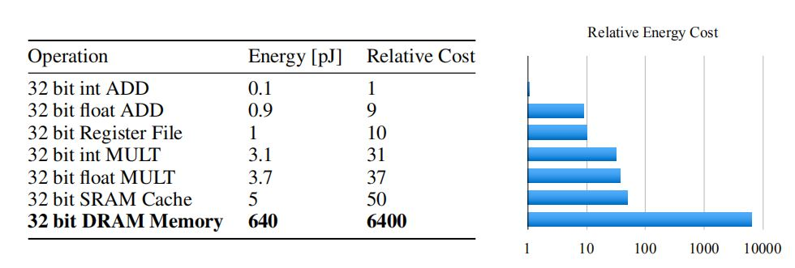
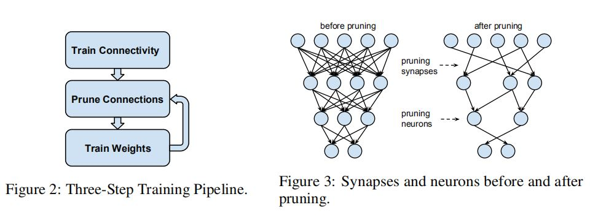
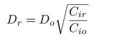
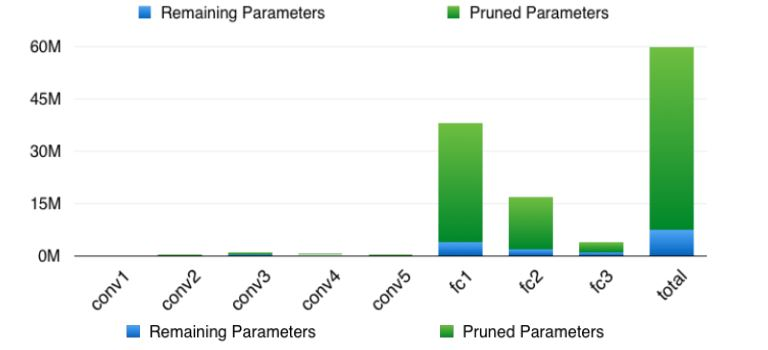
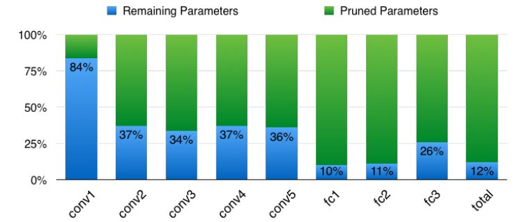
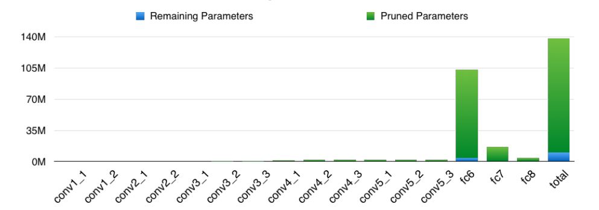
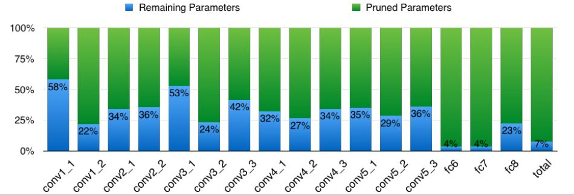

Learning both Weights and Connections for Effificient Neural Networks
摘要
为了传统神经网络运行时所需的存储及计算资源，将层间的神经元的连接权重依据幅度大小排序，在不影响精度的情况下，去除掉那些冗余的不重要的连接。剪枝过程分三步走–> train-prune-retrain. 测试结果，AlexNet在ImafeNet上在没有带来精度损失的条件下参数减少了9倍，VGG-16减少了13倍。
| 网络模型 | LeNet-5 | AlexNet | Deepface |
|---|---|---|---|
| 参数量大小 | <1M | 60M | 120M |
- 存储、内存位宽、计算消耗

从上表可以看出，神经网络在进行运算时主要的能耗用在了数据的读取上，即
SRAM和DRAM， SRAM是片上的静态随机存储，这种存储器只要保持通电，里面存储的数据就可以恒常保持，耗电量小，访问速度快，容量也小；DRAM是片下的动态随机存储器，需要周期性的充电，定时刷新，故耗电量大，访问速度慢，但容量大。
故放不进SRAM的网络模型，只能放进DRAM，同时耗能更多。
最近进展
神经网络中冗余的参数，导致了计算与存储的浪费。为了去掉这些冗余之前也有一些工作进行了尝试。如对激活值进行INT8量化(Vanhoucke et al. ),通过近似低秩分解找到神经网络替代的线性结构( Denton et al),或通过向量量化压缩深度卷积网络。这些技术和神经网络剪枝都是正交的，可以组合使用。
这篇文章中的剪枝过程共三步如下图所示，其中prun->retrain可以循环执行多轮

剪枝过程
- 最开始训练不是为了得到最终的权重值，而是为了学习那些权重是重要的。然后根据阈值去掉那些不重要的，再retrain恢复精度。循环多次直至符合要求。
正则化
正则方式的选择对剪枝和retrain的表现很有影响，L1正则化得到的剪枝效果不错，但retrain后的表现没有L2正则化好。
Dropout率调整
dropout通常是用来防止过拟合的，在retrain阶段dropout比例要随着模型的容量做出相应的调整。随着模型的参数逐渐稀疏，输出结果的预测方差(variance)也会越来越小，防止了过拟合，因此dropout率也要慢慢下调。
进行定量分析调整的公式如下：

局部剪枝及参数联合适应
- 一轮剪枝过后，进行retrain时的初始化权重，保持和原网络的初始化权重一样(针对这一点其实还是要视情况而定，在The Lottery Ticket Hypothesis: Finding Sparse, Trainable Neural Networks这篇文章中也做了相应的实验)
- 为了防止在retrain阶段出现梯度消失等问题，在剪枝完全连接层进行retrain时，会固定住卷积层的参数，反之亦然。
迭代剪枝
每轮迭代其实是一个寻找最优连接贪婪搜索的过程，作者也进行了基于绝对值的概率剪枝，但结果不理想。
剪掉神经元
在剪枝完一轮后，那些没有输入或输出的神经元可以被安全的剪掉。
实验验证
作者使用Caffe框架在TItanX及GTX980上，对四种网络模型在MNIST及ImageNet数据集上进行了测试。
- AlexNet结果


- VGG16结果

